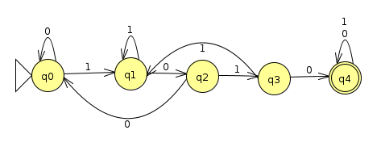

Homework 3: NFAs And DFAs
Chris Tralie
Overview / Logistics
The purpose of this problem set is to give you practice with NFAs and their interplay with DFAs. At the heart of what we're doing is the idea that if we've done the hard work to design DFAs to recognize some language(s), we can do a little more work to treat them as modules and to combine them in clever ways to make DFAs that recognize other languages. Sometimes an NFA will help as an intermediate step.
For all problems that require you to construct an NFA or a DFA, you should submit a JFLAP file. For all other problems, submit a picture of pen + paper work or a PDF document of a writeup. Enjoy!
(Q, Σ, δ, q, F)Problem 1: The Union of Regular Languages (3 Points)
Design a DFA that recognizes strings over the alphabet {a, b, c} that contain ab or that contain bc. Then, design an NFA that also recognizes this language
Below are some tests you can try in JFLAP (Click here to download them)
| Input | Result |
| abbcac | Accept |
| aacbccabb | Accept |
| babaabcaca | Accept |
| bc | Accept |
| abbbacac | Accept |
| aca | Reject |
| a | Reject |
| bcaaba | Accept |
| ccabbbbccc | Accept |
| c | Reject |
Problem 2: The Intersection of Regular Languages (3 Points)
Prove by construction that regular languages are closed under intersection
Hint: You can do a similar construction to the proof that regular languages are closed under union, but all you need to change is the accept state
Problem 3: NFA Design (3 Points)
Design an NFA that recognizes the language of odd binary numbers that have a 1 in the 32s place, when read from left to right.
Below are some tests you can try in JFLAP (Click here to download them)
| Decimal Number | Input | Result |
| 99 | 1100011 | Accept |
| 206 | 11001110 | Reject |
| 239 | 11101111 | Accept |
| 189 | 10111101 | Accept |
| 230 | 11100110 | Reject |
| 118 | 1110110 | Reject |
| 144 | 10010000 | Reject |
| 73 | 1001001 | Reject |
| 8 | 1000 | Reject |
| 228 | 11100100 | Reject |
Problem 4: The Complement of Regular Languages (3 Points)
We've seen some examples where swapping the accept and non-accept states of a DFA that recognizes a language L over the alphabet Σ yields a DFA which recognizes the complement of L; that is, all strings made up of characters from Σ that are not in L. For instance, the machine below accepts binary strings that contain 1010 somewhere (Click here for the JFLAP file)
and the machine below accepts binary strings that do not contain 1010 (Click here for the JFLAP file)

Does this same property hold for NFAs? If so, provide a proof in general. If not, show a counter-example (an example where this is not true), along with the inputs that break it.
Problem 5: The Union And Concatenation of Regular Languages (3 Points)
Create an NFA that recognizes the the language of strings with a nonzero and even number of a's or with a nonzero and even number of bs, followed by one or more bs, followed by an odd number of a's or an odd number of b's.
Below are some tests you can try in JFLAP (Click here to download them). If you don't agree on a particular test case, take advantage of JFLAP's NFA branch explorer by trying that test out with Input->Step By State
| Input | Result |
| aaaab | Reject |
| bbaabbb | Accept |
| bbaabaa | Reject |
| aabbbb | Accept |
| ababab | Accept |
| abab | Reject |
| ababb | Accept |
| aaaba | Reject |
| bbb | Reject |
| bbbb | Accept |
| bbbbbbbbbbbbbb | Accept |
| aaaaaaaaaaa | Reject |
| bbbaabb | Accept |
Let's highlight a couple of the accept strings to show how they get split up
Example 1: ababab
We can split this up as follows
| A nonzero and even number of a's or with a nonzero and even number of bs | One or more bs | An odd number of a's or an odd number of b's |
| aba | b | ab |
Example 2: ababb
| A nonzero and even number of a's or with a nonzero and even number of bs | One or more bs | An odd number of a's or an odd number of b's |
| aba | b | b |
Problem 6: The Reverse of Regular Languages Part 1 (3 Points)
Prove using a DFA that if a binary string is divisible by 3, then its reverse is also divisible by 3.
Problem 7: The Reverse of Regular Languages Part 2 (3 Points)
If a binary string is divisible by 6, then its reverse is not necessarily divisible by 6. For instance, the string 1100 (12) is divisible by 6, but its reverse 0011 (3) is not divisible by 6. Construct a DFA that recognize the language of binary strings whose reverse is divisible by 6. These strings should be inputted from right to left.
Hint: First construct and test an NFA that recognizes this language, then convert this to a DFA using the technique we described in class. If you've only expanded the states you needed to expand, the DFA should have even fewer states than the one that recognizes strings divisible by 6!
Below are some tests you can try in JFLAP (Click here to download them)
| Input | Decimal Number | Reverse Binary | Reverse Decimal | Result |
| 1010111 | 87 | 1110101 | 117 | Reject |
| 00100001 | 33 | 10000100 | 132 | Accept |
| 001101 | 13 | 101100 | 44 | Reject |
| 00000011 | 3 | 11000000 | 192 | Accept |
| 0010011 | 19 | 1100100 | 100 | Reject |
| 0110011 | 51 | 1100110 | 102 | Accept |
| 01101111 | 111 | 11110110 | 246 | Accept |
| 11010111 | 215 | 11101011 | 235 | Reject |
| 0010101 | 21 | 1010100 | 84 | Accept |
| 00010001 | 17 | 10001000 | 136 | Reject |
Problem 8: Ordered Mixing of Regular Languages (3 Points)
Define an ordered mixing of two regular languages A and B over the alphabet Σ to be the set of all strings s so that
\[ s = a_1b_1a_2b_2 ... a_kb_k \]
where the string\[ a_1a_2 ... a_k \in A \]
and the string\[ b_1b_2 ... b_k \in B \]
and each ak, bk is a chunk of a string; formally
\[ a_k, b_k \in \Sigma^* \]
For instance, suppose that we have the string computerscience in the first language and the string philosophy in the second language. Then here are a few ordered mixings we can create from just these two words:
- cphoilmposouphyterscience
- comppuhitelorsospcihyence
- cphiolompsopuhyterscience
- cphiompluteorsscopienhcye
- cphompilousotephrsycience
Your task in this problem is to prove by construction that an ordered mixing of two regular languages is a regular language.
Hint #1: You should consider making cartesian product states so you can keep track of where you are in each string that you're mixing
Hint #2: It may be easier to first think about how to make a DFA to recognize a simpler type of mixing where each chunk is a single character. Then see if you can extend this idea with an NFA to define a full ordered mixing